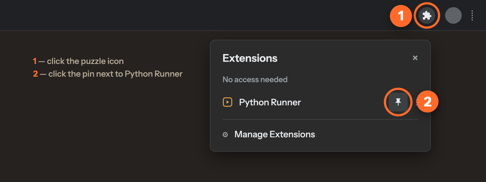
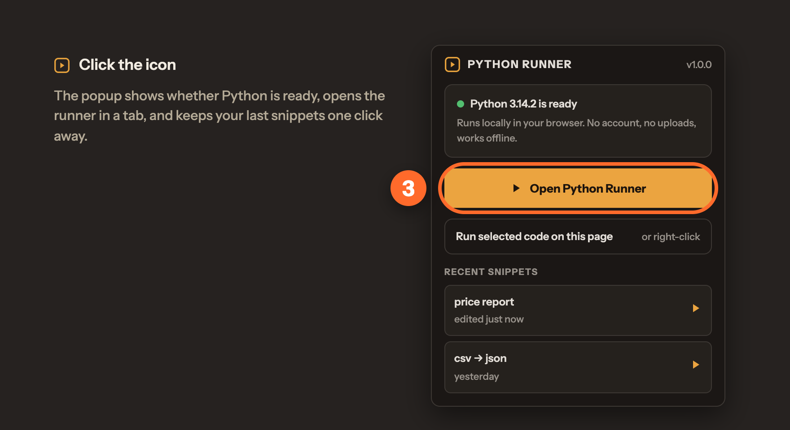
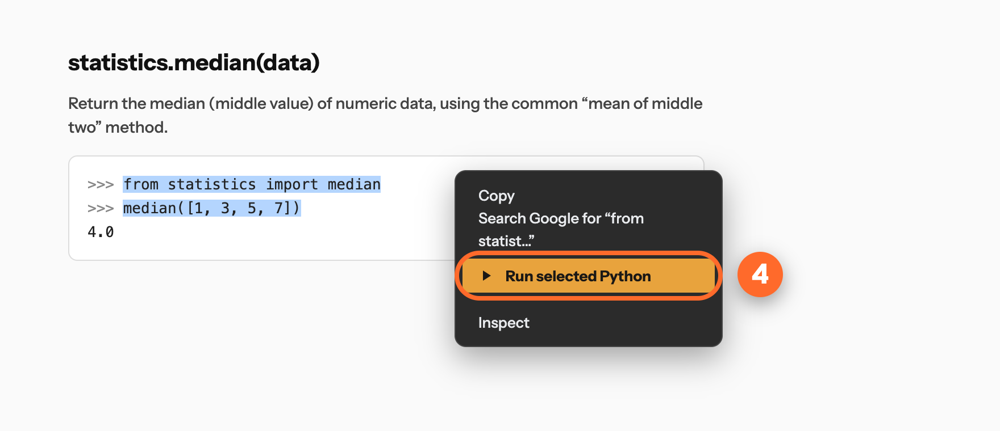

Chrome hides new extensions behind the puzzle icon — pin it first, it takes two clicks.

The runner opens in its own tab: editor on the left, output on the right. The first start unpacks Python once and takes a couple of seconds; after that it opens instantly.

Select a snippet in the docs, on GitHub or in a chat, choose Run selected Python — the runner opens with the code pasted in, indentation intact, and runs it right away.

Opens docs.python.org — select any example and right-click.